bfd
MATLAB code for Bayesian interpretation of Fisher's discriminant
Bayesian Fisher's discriminant
This page describes how to use the so-called Bayesian Fisher Discriminant (BFD) software.
Please note that in the subsequent discussion we will be using these references:
T. Peña-Centeno and N. D. Lawrence. (2006) "Optimising kernel parameters and regularisation coefficients for non-linear discriminant analysis" in Journal of Machine Learning Research, accepted for publication.
T. Peña-Centeno and N. D. Lawrence. (2004) "Optimising kernel parameters and regularisation coefficients for non-linear discriminant analysis" Technical Report no CS-04-13, University of Sheffield, Department of Computer Science.
Kevin J. Lang and Michael J. Witbrock (1988) "Learning to tell two spirals apart" in Proceedings of the 1988 Connectionist Summer School. Morgan Kauffman
Spiral data, available here.
Gunnar Rätsch's data.
Release Information
Current release is 0.12
Release 0.12 was used for the experiments presented in [1]. The code was written with flexibility in mind so probably there is room to make improvements in terms of efficiency of computation.
Release 0.11 corresponds to the results presented in [2].
The BFD software requires some functions, written by Neil D. Lawrence, that have been put together in form of the NDLUTIL toolbox. You may access this toolbox with the username and password you are given when you register for the BFD toolbox. There are many versions of this toolbox but we recommend only a few of them in order to obatin the results of [1].
| Toolbox | Version |
|---|---|
| NDLUTIL | 0.12 (or below) |
| Netlab | 3.3 (It should work with v3.2 as well) |
| ls-SVMlab | 1.5 |
To obtain the classification results for benchmark data it will be necessary to download Gunnar Rätsch's data, available at [5]. You will also need the function normal, written by Ian T. Nabney. Note: this function does not belong to the Netlab toolbox, but is rather a worked example.
Please give a read to the readme.txt file that comes in this distribution to have more details about the installation procedure.
Examples
Synthetic datasets
The experiments with synthetic data, presented in [1], can be recreated
by using the function bfdClassifyToyData. This function can be applied
on the four synthetic datasets included in the toolbox, henceforth
referred as: spiral, overlap, bumpy and relevance.
bfdClassifyData also allows the use several type of GP priors, among
them an RBF and an ARD-composed one. The spiral problem was first
proposed by [3] and the dataset included in this distribution is based
on the file found at [4].
Given the inputs  and 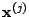 we have implemented the RBF
prior in the following way,
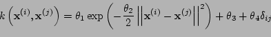,
and 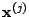 we have implemented the RBF
prior in the following way,
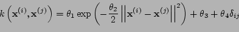,
where the parameter vector  .
.
The ARD-composed kernel is defined as
 ,
,
with a vector of parameters given by  . This kernel is
composed of four parts: RBF-ARD, LINEAR-ARD, BIAS and NOISE parts, thus
giving its name of 'composed'.
. This kernel is
composed of four parts: RBF-ARD, LINEAR-ARD, BIAS and NOISE parts, thus
giving its name of 'composed'.
RBF experiments
Just run the following commands from Matlab's command prompt
>> dataset = 'overlap';
>> kernelType = {'rbf', 'bias', 'white'};
>> model = bfdClassifyToyData(dataset, kernelType); `For each dataset (spiral, overlap, bumpy and relevance) these
commands should produce the plots shown below. The function
bfdClassifyToyData also returns a structure model containing all
the information about the discriminant.
 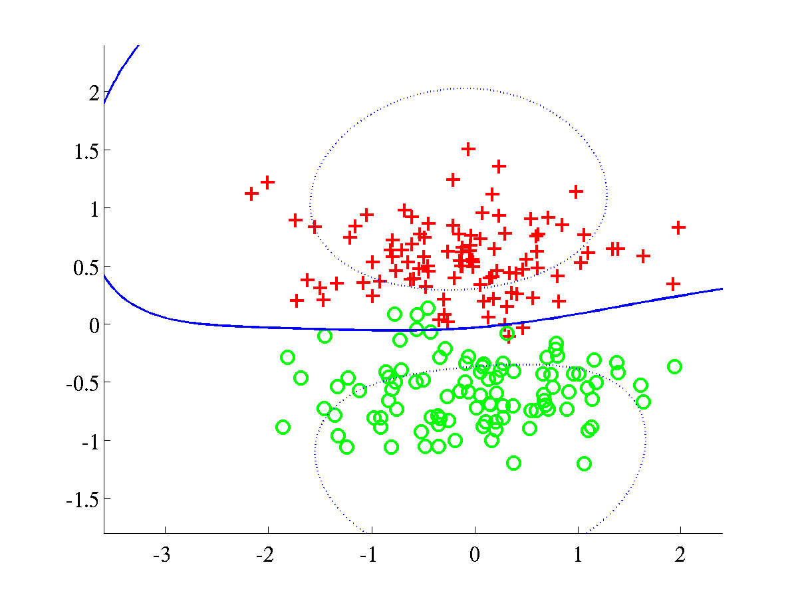
Classification of synthetic datasets using an RBF kernel. Two classes
are shown as pluses and circles. The separating line, in blue, was
obtained by projecting test data over a grid. The dotted line indicates
points at 1/4 of the distance, as measured in projected space, from the
decision boundary to the class mean. The blue line was obtained after
training a BFD model by maximising the marginal log-likelihood, L.
Left: Spiral data, with bound after training L=658.6107.
Right: Overlap data with final bound L=638.5258.
In both problems the parameters were initialised to
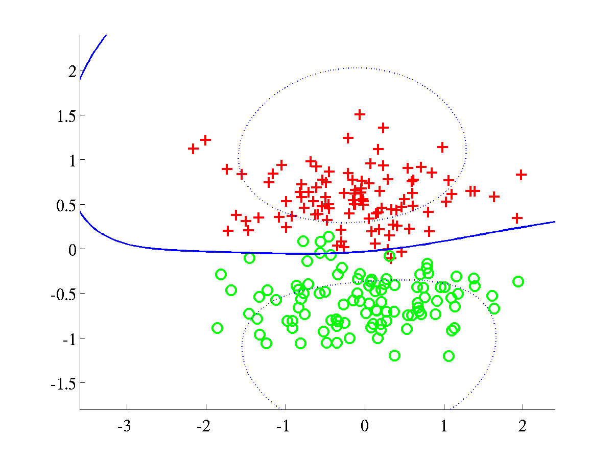
Classification of synthetic datasets using an RBF kernel. Two classes
are shown as pluses and circles. The separating line, in blue, was
obtained by projecting test data over a grid. The dotted line indicates
points at 1/4 of the distance, as measured in projected space, from the
decision boundary to the class mean. The blue line was obtained after
training a BFD model by maximising the marginal log-likelihood, L.
Left: Spiral data, with bound after training L=658.6107.
Right: Overlap data with final bound L=638.5258.
In both problems the parameters were initialised to  .
.
 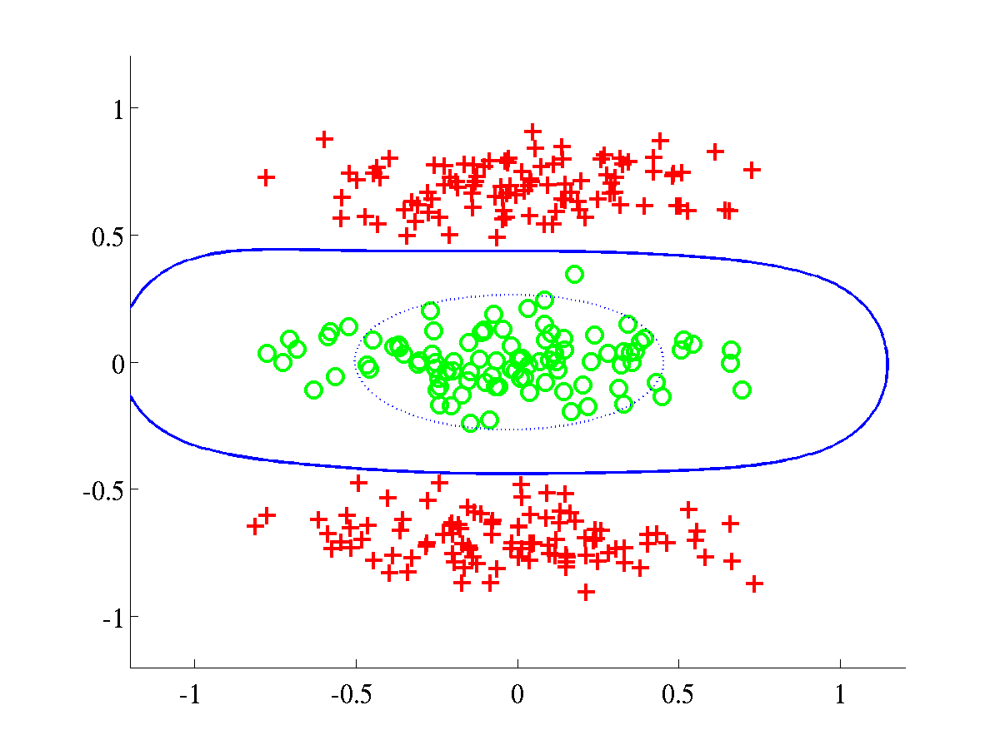
Left: Bumpy data with final bound L=609.0547. Right:
Relevance data, with bound L=895.7308.
For both problems the initial parameters were set to .
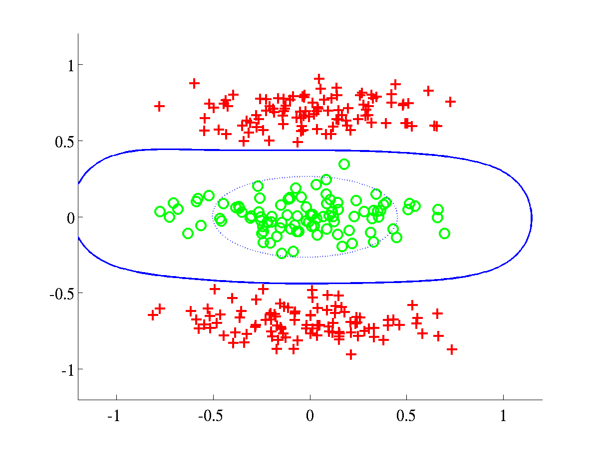
Left: Bumpy data with final bound L=609.0547. Right:
Relevance data, with bound L=895.7308.
For both problems the initial parameters were set to .
ARD experiments
In order to run experiments with the ARD-composed kernel, it is
necessary to use a different value for the variable kernelType, as it
is shown below.
>> dataset = 'spiral';
>> kernelType = {'rbfard', 'linard', 'bias', 'white'};
>> model = bfdClassifyToyData(dataset, kernelType); `The script should produce the plots shown below.
 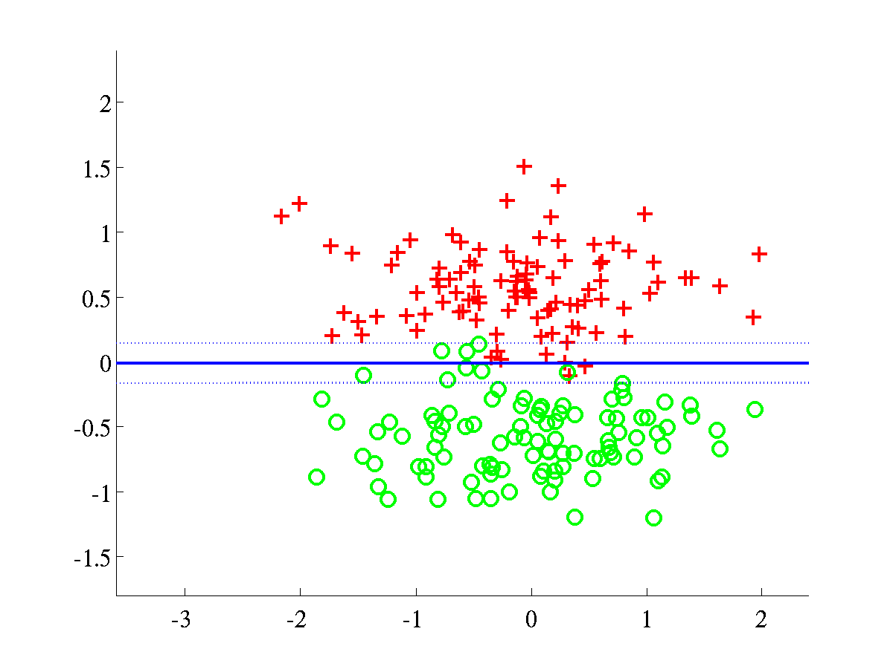
Left: Spiral data, with final L=674.2042. In this experiment we
initialised
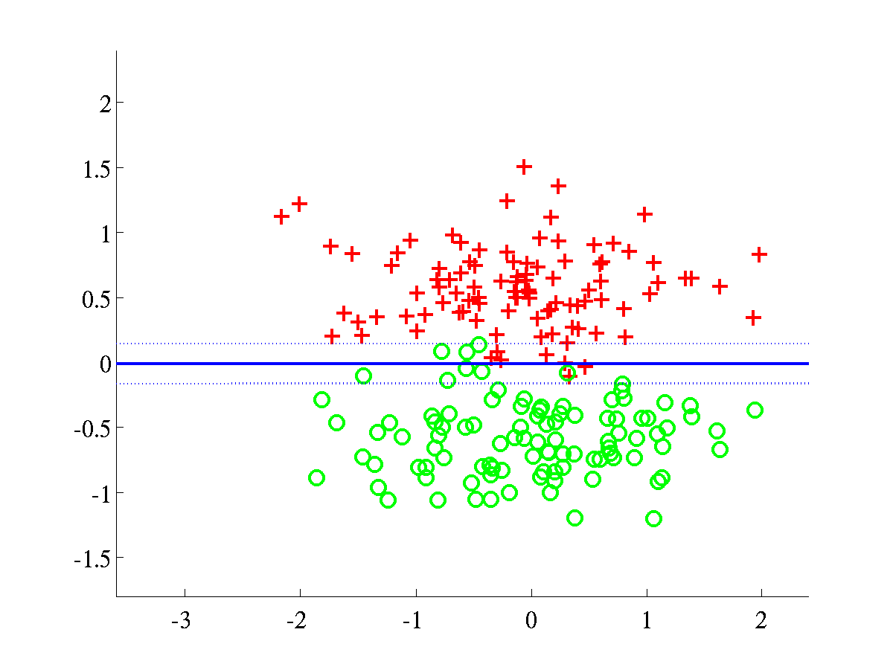
Left: Spiral data, with final L=674.2042. In this experiment we
initialised  and the rest of parameters
and the rest of parameters
 Right: Overlap data, with final L=650.0908. This experiment used
as initial parameters .
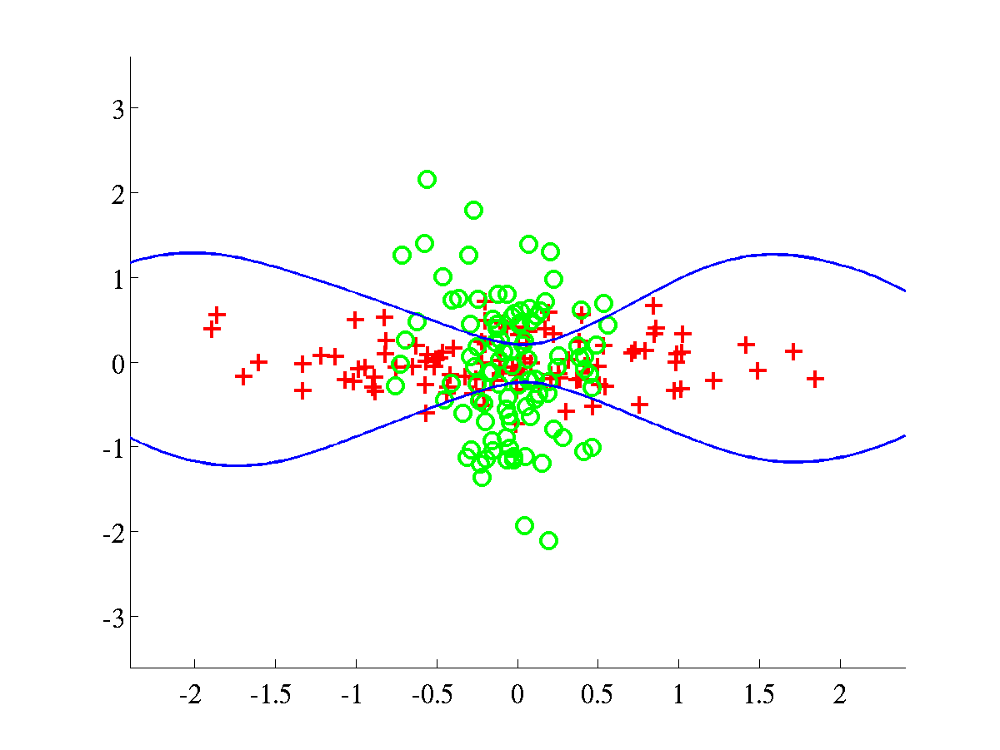
Right: Overlap data, with final L=650.0908. This experiment used
as initial parameters .
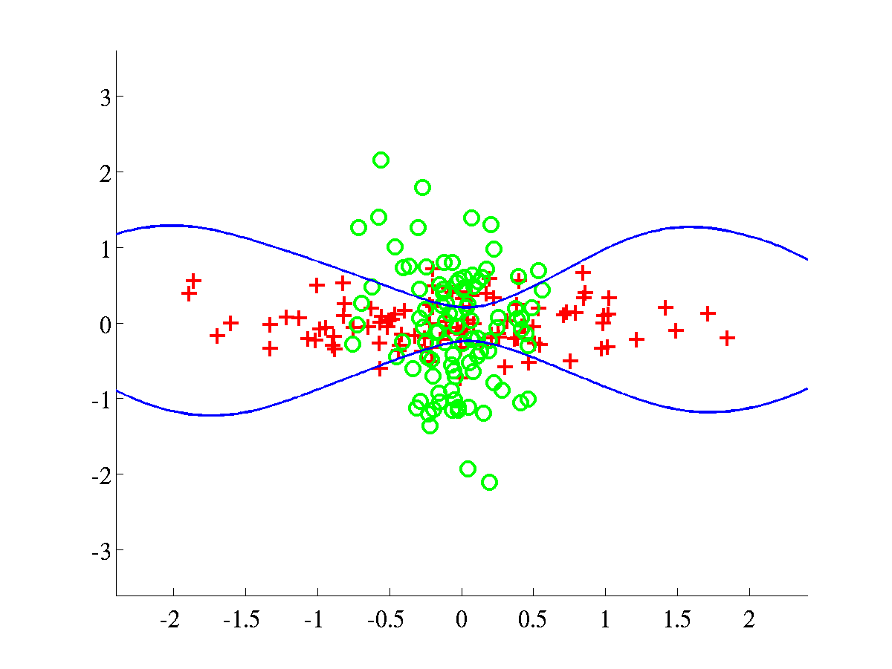 Left: Bumpy data, with final L=636.8442. Right: Relevance
data, with final L=998.9992.
In both problems we used an initial.
Left: Bumpy data, with final L=636.8442. Right: Relevance
data, with final L=998.9992.
In both problems we used an initial.
Generating ROC curves and computing AUC's
There are several demos included in this distribution and two of them were specifically written to obtain some of the results presented in Table 1 of reference [1]. More specifically, these demos generate ROC curves for either banana or breast-cancer data and then obtain statistics related to the AUC's (area under ROC curves).
The first demo can be run from the command-line as shown below
>> demAUCbanana
After execution, a file
banana_rbfbiaswhite_test_AUC_info.txt
will be created inside the directory <bfd-path>/bananaROC/. This file
contains several statistics related to the ROC curves of banana and
should look like this
Dataset: banana
Kernel used: rbfbiaswhite
These are some statistics of the ROC curves
###########################################
mean = 0.950725
median = 0.952039
max = 0.960705
min = 0.929625
std = 0.006099
Further information in the directory <bfd-path>/bananaROC/ will be
stored, for example a copy of the ROC curve for every test instance of
banana.
The second demo does the analogue process for breast-cancer. Hence
it is required to run
>> demAUCbreastCancer in order to obtain a result of this kind
Dataset: breast-cancer
Kernel used: rbfbiaswhite
These are some statistics of the ROC curves
###########################################
mean = 0.734383
median = 0.736931
max = 0.909649
min = 0.615699
std = 0.052524.
Note on ROC curves
During execution of either of the scripts (demAUCbanana or
demAUCbreastCancer) the ROC curve of each test instance of the
datasets will be shown on the screen for a couple of seconds. This
should look as shown below.

 Some ROC curves of the test instances of banana. Left: First
instance. Right: Second instance.
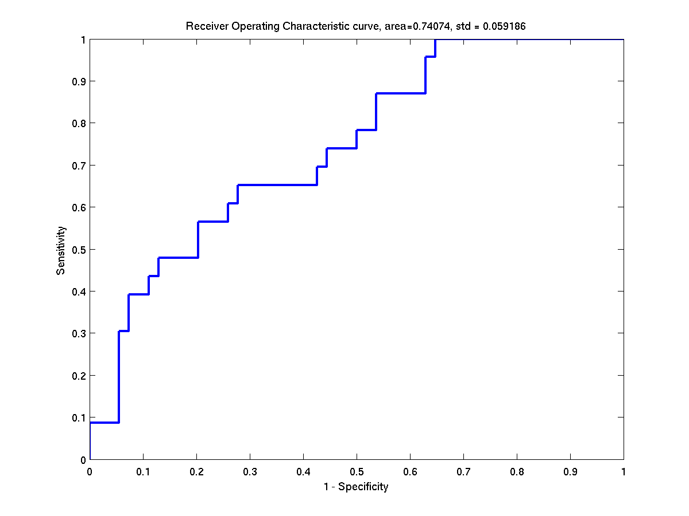
Some ROC curves of the test instances of banana. Left: First
instance. Right: Second instance.
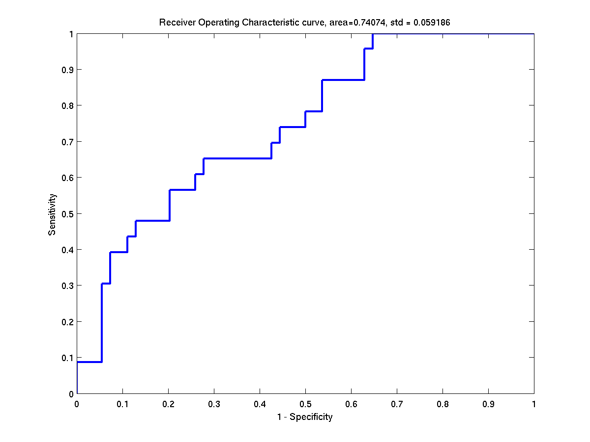 Some ROC curves of the test instances of breast-cancer. Left:
First instance. Right: Second instance.
Some ROC curves of the test instances of breast-cancer. Left:
First instance. Right: Second instance.
Additional ROC-AUC demo
An extra script obtains ROC curves (and additional statistics) for the heart dataset; this time according to the results of Table 2 of reference [1]. Again, it is only a matter of running a script.
>> demAUCheart
The result file should look as follows.
Dataset: heart
Kernel used: rbfardlinardbiaswhite
These are some statistics of the ROC curves.
###########################################
mean = 0.909429
median = 0.908183
max = 0.960591
min = 0.845779
std = 0.027045
Generating histograms of projected data
The histograms presented in Figure 10 of reference [1] can be created by running two scripts. The first script
>> demHistTwonorm
will display and save on file the histograms of twonorm projected
data. All files related the histograms of twonorm will be stored in
a directory <bfd-path>/twonorm_avgHistogram. Among other things, a
couple of .eps files will contain the average histograms of training
and test data. Such histograms should be like the ones below.
 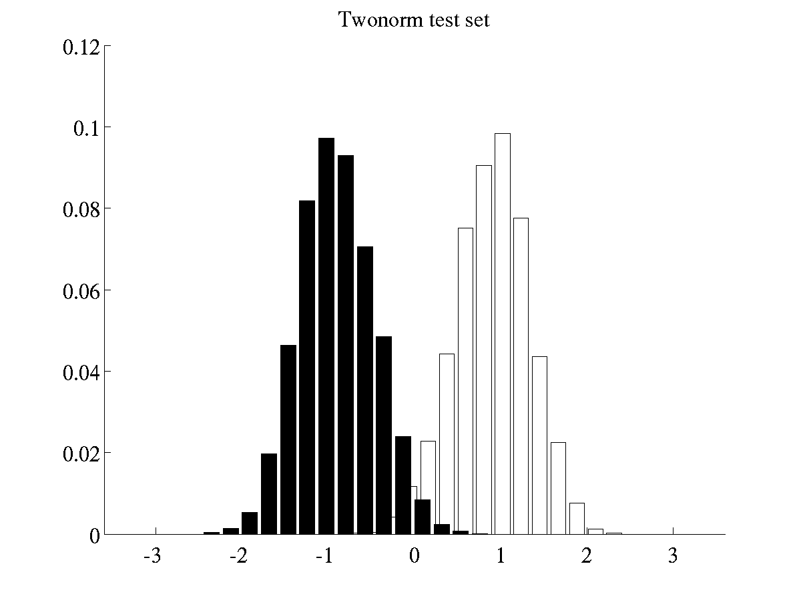
Left: Histogram of projected data for training instances of
twonorm Right: Histogram of projected data for test instances of
twonorm.
The batch of histograms of waveform are obtained by running the
script
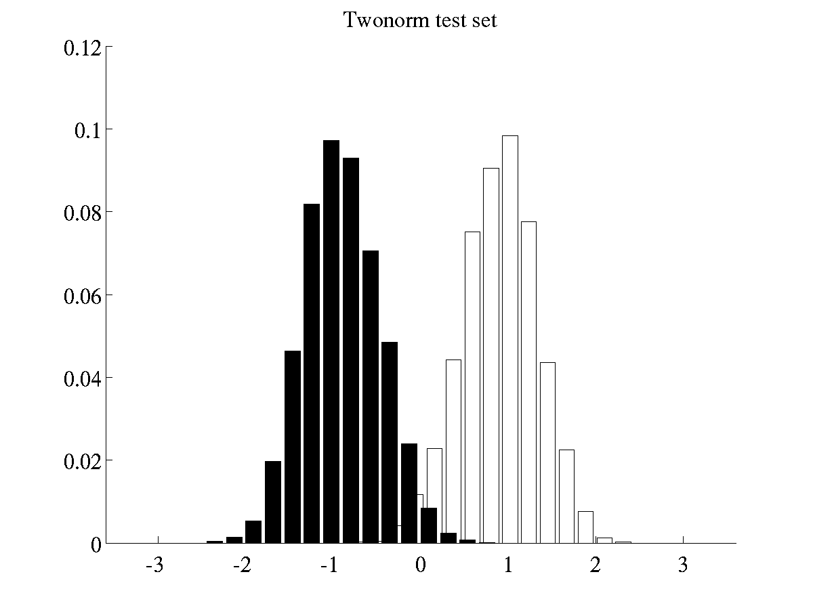
Left: Histogram of projected data for training instances of
twonorm Right: Histogram of projected data for test instances of
twonorm.
The batch of histograms of waveform are obtained by running the
script
>> demHistWaveform
which generates plots like the following ones. 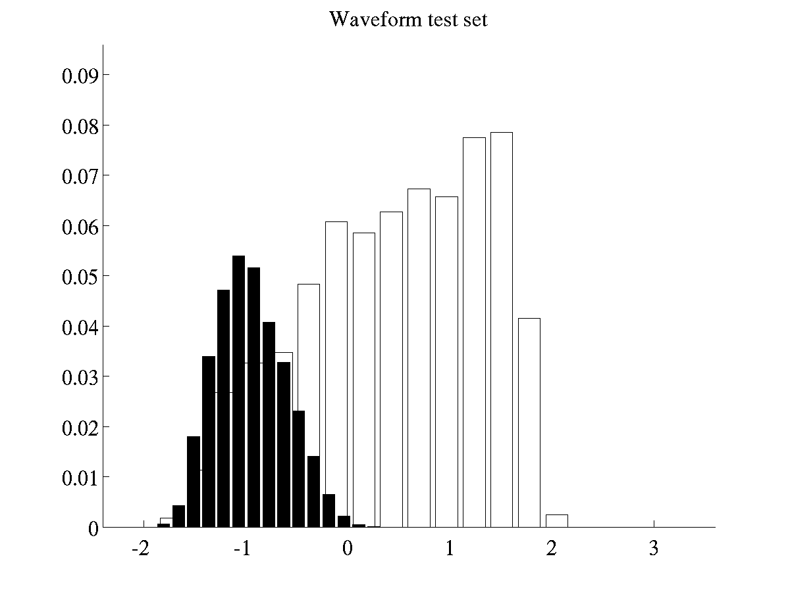 Left: Histogram of projected data for training instances of waveform Right: Histogram of projected data for test instances of waveform
Other experiments
Further experiments can be carried out by modifying the scripts
previously mentioned of by using the functions bfdClassifyData and
bfdClassifyToyData. Please note that in order to recreate the results
of [1], it will also be necessary to read the file
experimentResults.txt included in this distribution.
Tonatiuh Pena Centeno 2006-02-11
Page last modified on Fri Jan 5 12:19:12 GMT 2007.